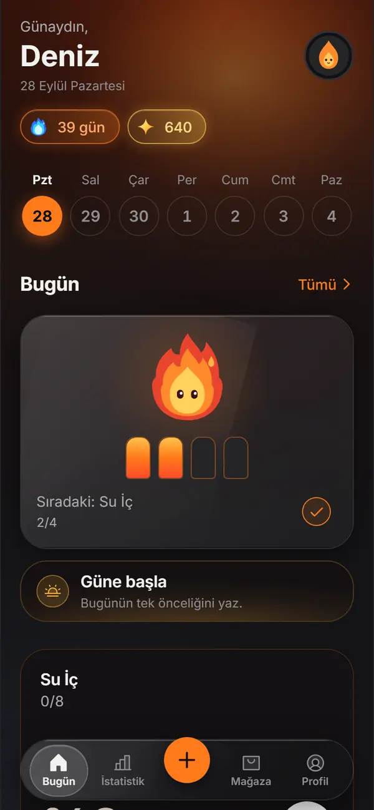
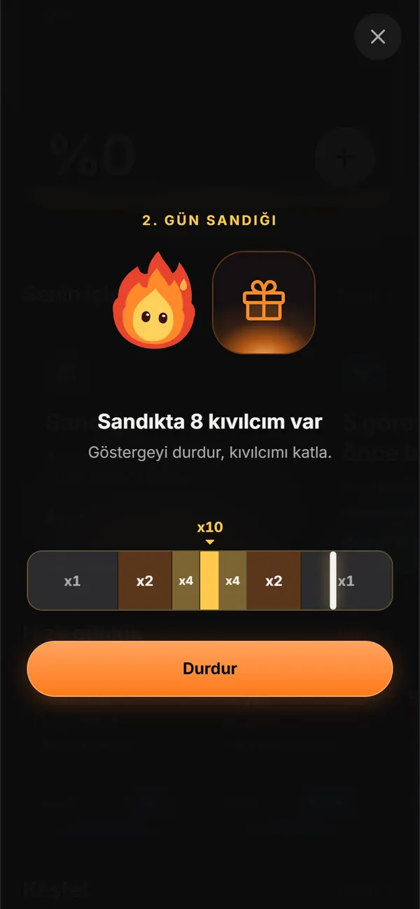
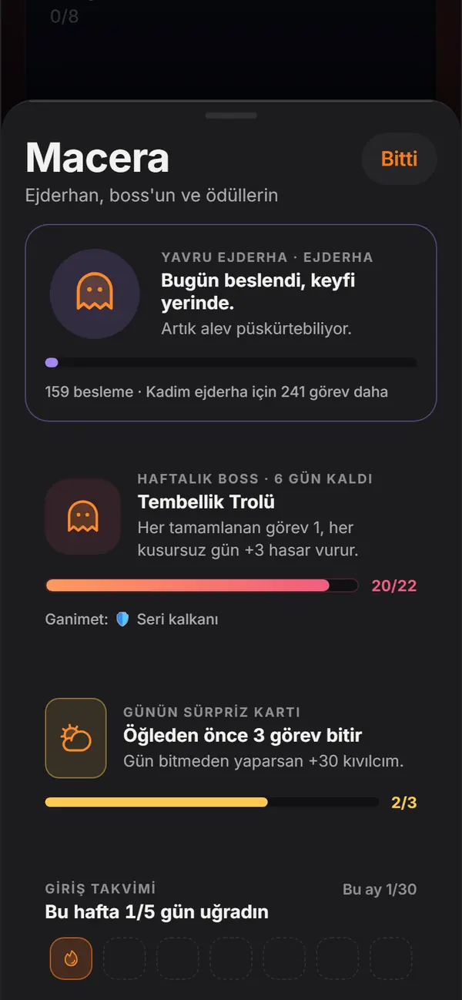
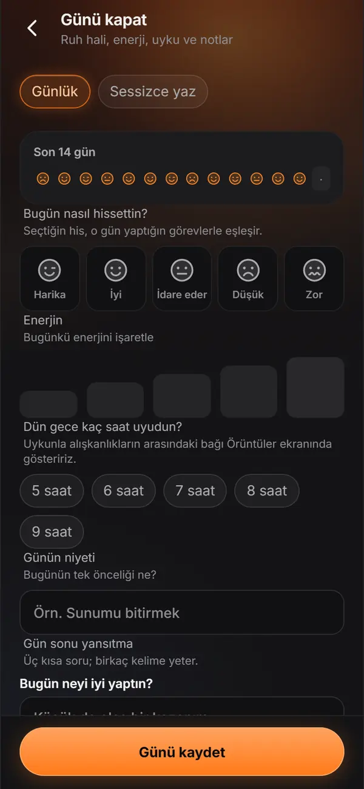
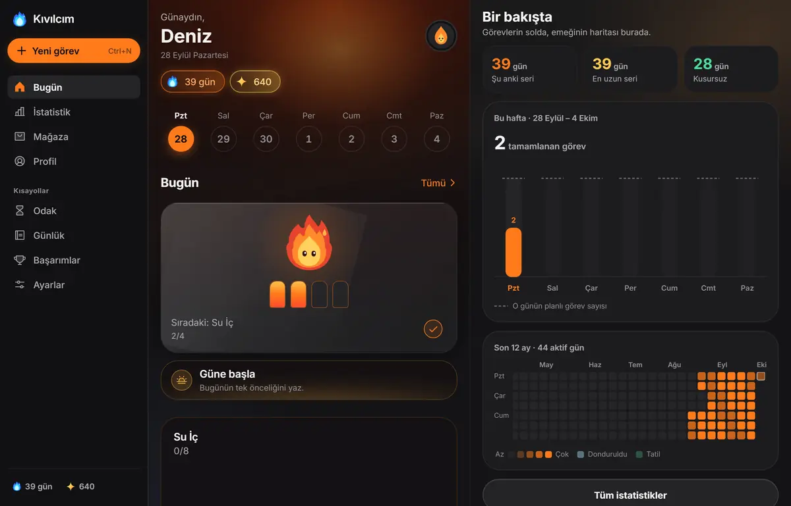

Küçük görevler, büyüyen bir alev.
Kıvılcım oyunlaştırılmış bir alışkanlık uygulaması: görevini tikle, kıvılcım kazan, serini büyüt. Hesap yok, reklam yok, her şey ücretsiz.
Windows, Mac, Linux ve Android için. iPhone sürümü yakında.
Ocak: örnek bir gün
0 kıvılcımÖrnek görevlerle deneme. Uygulamada her görev bir çıta; tikledikçe çıtalar tutuşur.
Nasıl çalışır
Görev ekle
Her gün, haftada birkaç kez ya da belirli günlerde tekrarlanan bir görev yaz.
Tikle
Tek dokunuşla ya da görevi sağa kaydırarak tamamla.
Kıvılcım kazan
Her görev 10 kıvılcım getirir. Kıvılcımları mağazada harcarsın.
Serin büyür
Her gün alevin biraz daha büyür. 7, 30, 100 ve 365. günlerde rengi değişir.
Kıvılcım'la bir gün
-
Sabah
Hatırlatma saatinde gelir: görevden 15 dakika önce haber verir, 60 dakika sonra “yaptın mı?” diye sorar.
Eğer–sonra tetikleyicisi yeni alışkanlığı eskisine bağlar: “Kahvemi içince 10 sayfa oku.”
Hatırlatma telefonda -
Gün içi
Buzdolabına yapıştırdığın QR etiketini okut, görev tiklensin.
Odaklanman gerekince Pomodoro ya da görevin zamanlayıcısı süreyi tutar.
QR etiketi web sürümüyle -
Akşam
Günlüğe ruh hâlini, niyetini ve şükrünü yaz. Gün kapanışı özeti bugünü toparlar.
Sandığını aç ve çarpanı yakala: sandıktaki kıvılcım katlansın.
Ocak ve bugün
Ana ekrandaki Ocak'ta her görev bir çıta. Görevleri tek dokunuşla ya da kaydırarak bitirirsin; sıradaki görev hep elinin altında durur.
Kaydırarak dene
Sağa kaydır: tamamla. Sola kaydır: jokerle atla.

Sana uyan tekrar
Her gün, haftada birkaç kez ya da belirli günlerde. Yapılacak bir alışkanlık da seçebilirsin, bırakılacak bir alışkanlık da; bırakmada temiz günler sayılır.
Küçük başla, büyüt
Sayaç, zamanlayıcı, alt adım ve mini versiyon. Hedef haftadan haftaya kendiliğinden artabilir.
Saatinde hatırlatma
Görev başına 15 dakika önce haber, 60 dakika sonra “yaptın mı?”. Bildirim biçimi normal, nazik ya da günde tek özet olabilir.
TelefondaYere ve takvime bağla
Konum hatırlatması seçtiğin yere varınca haber verir. Görevlerini takvimine de aktarabilirsin.
Konum: telefondaWeb'de uygulama açıkkenTakvim: her yerdeEtiketle tikle
Bir QR etiketi yazdır; okutunca görev tiklenir. Aynı bağlantı bir NFC etiketine de yazılabilir.
Web sürümüyleNFC: Android Chrome, betaEğer–sonra
“Kahvemi içince” gibi bir tetikleyici, yeni alışkanlığı zaten yaptığın bir şeyin arkasına bağlar.
Kötü günde sade liste
Zor bir günde ekran sadeleşir. Yeni başlayan biri için bölümler günden güne açılır.
Serin, beş renkli bir yolculuk
Seri büyüdükçe alevin rengi değişir: 7, 30, 100 ve 365. günlerde yeni bir kademe. Aşağı kaydır, bir yılı birkaç saniyede geç.
- Turuncu Alevİlk günden başlar.
- Altın Alev7. günde.
- Mavi Plazma30. günde.
- Mor Nova100. günde.
- Beyaz Yıldız365. günde.
Serini koru
Seri dondurucu
Kaçırdığın bir günü korur. En çok 3 tane saklayabilirsin.
Seri kalkanı
Kaçırılan 3 güne kadar seriyi korur; mağazadan kıvılcımla alınır.
Tatil modu
Tatildeyken serin bekler; döndüğünde kaldığın yerden devam edersin.
Seri kurtarma
Serin söndüyse ana ekranda kurtarma kartı çıkar: eksik günü tamamla, serini geri al.
Mezun et ya da yeni sezon başlat
Oturan bir alışkanlığı mezun et. Yeni sezonda sayaçlar sıfırlanır, geçmişin silinmez.
Küçük kutlamalar
Kademe atladığında ve her yeni seri gününde bir kutlama; akşam da gün kapanışı özeti.
Kıvılcım kazan, harca
Her görev 10 kıvılcım getirir. Kıvılcım parayla alınmaz; yalnız görev yaparak kazanılır.
Sandık çarpanı
7 günlük sandık şeridinde her gün bir sandık açılır. Gösterge gidip gelirken durdur: sandıktaki kıvılcım x1, x2, x4 ya da x10 ile katlanır.
Örnek sandık: 10 kıvılcım
Gösterge yavaş: sade hareket açık.

- Kıvılcım ve bonuslar
- Görev başına 10 kıvılcım, mini versiyonda 5. Bonuslar: kusursuz gün, erken kuş (05.00–09.00), günün yıldızı (×3) ve zor görev.
- Mağaza
- Görev jokeri, güç iksiri (24 saat boyunca kıvılcım iki kat) ve seri kalkanı.
- Kozmetikler
- 4 kozmetik tema (Synthwave, Buzul, Orman, Lav); konfeti, alev ve arka plan; satır, düğme ve söz kaplaması; avatar ve kostüm, isim efekti, çerçeve ve tik sesi (web ve masaüstünde). Günün indirimi ve eşya birleştirme.
- Şans ve sürprizler
- Şans çarkı, gizemli kutu ve faizli kıvılcım kumbarası. Altın tik, kıvılcım yağmuru ve mutlu saat.
- Sandık şeridi
- 7 günlük sandık şeridi: 7. günün büyük sandığında 15 kıvılcım ve bir seri dondurucu çıkar; dondurucu stoğun doluysa dondurucu yerine 30 kıvılcım. Bir gün kaçırsan da şerit sıfırlanmaz.
- Hepsi kıvılcımla
- Bütün kozmetikler kıvılcımla alınır, parayla değil.
Macera, dünya ve rozetler
Serinin yanında büyüyen küçük bir dünya. Hepsi görev yaptıkça ilerler.
- İlk Kıvılcım
- Isınma
- Haftalık Alev
- Aylık Ateş
- Yüzüncü Gün
- Bir Yıl Boyunca
- Kusursuz
- On Kusursuz Gün
- Kusursuzluk Ustası
- Yüz Tik
- Beş Yüz Tik
- Bin Tik
- Erken Kuş
- Gizli rozet
- Gizli rozet
- Buz Gibi
- İlk Alışveriş
- Koleksiyoncu
- Sayaç Ustası
- Odak Ustası
- Özgürlüğe Adım
- Özgür Ruh
- Gizli rozet
- Gizli rozet
- Güvende
- Onuncu Seviye
- Meydan Okuyan
- Sandık Avcısı
- Hafta Sonu Savaşçısı
- Kusursuz Hafta
- Saf Alev
- Katışıksız
- Mezun
33 rozetin 4'ü gizli: buluncaya kadar adları görünmez. Işığın gücü rozetin bronz, gümüş ya da altın oluşunu gösterir.
- Macera. Yavru ejderhan beslendikçe büyür, her hafta bir boss çıkar, sezon yolunda ilerlersin. Tek yetenek ağacında 3 katmanda 6 güç açılır.
- Meydan okuma. Haftalık meydan okuma ve kendi koyduğun gerçek hayat ödülleri.
- Dünya. Kule, yumurta, harita, alışkanlık bahçesi, şehir ve alışkanlık kartları.
- Unvanlar. Kıvılcım'dan Süpernova'ya 9 seviye unvanı, bir de rozetlerle açılan unvanlar.
- Kıvılcım Wrapped. Yıl sonunda yılının hikâye özeti.

Kendini tanı
Serinin arkasındaki örüntüyü gör: hangi saatlerde iyisin, hangi gün zorlanıyorsun.
12 aylık ısı haritası
Bu hafta
- Haftalık grafik, takvim, tahmin ve rekorlar. Nerede olduğunu ve nereye gittiğini tek bakışta görürsün.
- Aylık karne ve alışkanlık gücü. Her alışkanlığın ne kadar oturduğunu gösterir.
- Örüntüler. En iyi saatlerini bulur; zor gün öngörüsü seni önceden uyarır.
- Kıvılcım ekonomisi ekranı. Kıvılcımının nereden gelip nereye gittiği.
- Otomatiklik ölçer. Bir alışkanlığın ne kadar kendiliğinden olduğunu ölçer.
Ritüeller ve programlar
Hazır bir programla başla, günü küçük ritüellerle kapat.
9 hazır program
- 10 günde su dengesi10 gün
- 14 günde sakin zihin14 gün
- 21 günde erken kalkma21 gün
- 21 günde derin odak21 gün
- 4 haftada harekete geç28 gün
- 28 günde derin uyku28 gün
- 30 günde okuma alışkanlığı30 gün
- 30 günde dik duruş30 gün
- 66 günde kalıcı alışkanlık66 gün
Günlük defter
Ruh hâli, niyet, şükür ve “sessizce yaz”. Sesli günlük tarayıcı desteğine bağlı: Chrome ve Safari'de var, Firefox'ta yok.
Sana dair olanlar
Gelecekteki sana mektup, söz defteri, hayal panosu ve doğum günü sürprizi.
Nefes ve Pomodoro
Bir dakikalık sakin nefes ya da odak turu, hepsi aynı yerde.
Dönem paketleri
5 dönem paketi: Yeni Yıl Kararları, Kış Enerjisi, Sınav Dönemi, Yaz Formu ve Okula Dönüş. Bir de başlangıç testi.

Utandırmayan bir koç
Seri kırılınca suçlama yok. Kıvılcım ne kadar tutarlı olduğunu gösterir: son 30 günde 27 gün, %90.
Kötü bir günde liste sadeleşir. Bildirimler istersen nazik gelir ya da günde tek özete iner. Koç tonunu da sen seçersin:
- Nazik arkadaş
Zor bir gün olabilir. Küçük bir adım da sayılır.
- Sert koç
Bahane yok. Kalk ve o görevi bitir.
- Esprili
Kanepe seni çok özledi ama görevlerin daha çok.
Paylaş, birlikte yak
- Kartlar. Seri kartı, haftalık özet, karne hikâyesi ve başarı sertifikası.
- Birlikte. QR ile arkadaş düellosu, paket paylaşma ve ortak meydan okuma.
- Alkış gönder. Puansız bir destek: yarış değil, cesaret.
Aile, yedek ve güvenlik
Aile profilleri ve çocuk modu
Her aile üyesi kendi profilini açar. Çocuk modunda mağaza, paylaşım ve dış bağlantılar kapanır; çıkmak için ebeveyn kapısı gerekir.
Kilit
PIN kilidi her yerde. Android'de parmak izi de olur; Face ID iPhone sürümüyle gelecek.
Yedekle ve geri yükle
Dosya, pano ya da CSV. Her gün kendiliğinden yerel bir yedek alınır; telefonda istersen bulut klasörüne de otomatik yazılır.
Gizlilik merkezi
Ne saklandığını ve hangi iznin neden istendiğini gösterir. Her şeyi buradan silebilirsin.
Geri bildirim
Uygulamanın içinden hata bildir ya da öneri gönder. Görev adların ve defterin mesaja eklenmez.
Senin rengin
Tema seçici yalnız yandaki telefonu boyar; dene.
- 6 tema seçeneği. Otomatik cihazına uyar; Gece, AMOLED, Gündüz, Kutup Işığı ve Sakura elle seçilir.
- Erişilebilirlik. Sade hareket, renk körü dostu işaretler, tek elle kullanım, saate göre gökyüzü ve gece yumuşatma.
- Yazı ve titreşim. Web ve masaüstünde 3 yazı boyu; telefonda uygulama sistemin yazı boyuna uyar. Telefonda 4 titreşim düzeyi.
- Düzen. Toplu düzenleme ve görev arşivi.
- Dil. Türkçe ve İngilizce (çeviri sürüyor).
Her cihazda
Windows, Mac, Linux, Android ve web. Bazı özellikler cihazın kendisine bağlı; hangisinin nerede çalıştığı aşağıda.

| Özellik | Android | Web | Masaüstü |
|---|---|---|---|
| Görevler, seri, oyun, istatistik, ritüeller | Var | Var | Var |
| Hatırlatma bildirimleri | Var | Yok | Yok |
| Ana ekran widget'ı | Var | Yok | Yok |
| Kilit ekranı sayacı | Beta | Yok | Yok |
| Adım sayar görevleri | Beta, uygulama açıkken | Yok | Yok |
| Konum hatırlatması | Arka planda da | Yalnız uygulama açıkken | Arka planda yok |
| PIN kilidi | Var | Var | Var |
| Parmak izi kilidi | Var | Yok | Yok |
| Bulut klasörüne otomatik yedek | Var | Yok | Yok |
| Hızlı eylemler | Yok | Ana ekrana eklenince | Yok |
| Kenar çubuklu geniş düzen | Geniş ekranda | Pencere 840 px ve üstünde | Var |
| Klavye kısayolları | Yok | Var | Var |
| Tik sesi | Yok | Var | Var |
- Ctrl/⌘ + N yeni görev
- Ctrl/⌘ + 1–4 bölümler
- Ctrl/⌘ + , ayarlar
- Esc geri
- QR ve NFC etiketleri web sürümünü açar: etiketi okutunca görev web sürümünde tiklenir. NFC etiketine yazmak Android'de Chrome ile olur (beta).
- Sesli asistan kısayolları için uygulamada adım adım rehber var; kısayol web sürümünü açar.
- Web sürümü ana ekrana eklenebilir. Sesli günlük Chrome ve Safari'de çalışır, Firefox'ta yok.
- iPhone sürümü yakında (App Store ve TestFlight). Face ID, Siri ve iOS'un Saydamlığı Azalt ile Kontrastı Artır ayarlarına uyum iPhone sürümüyle gelecek.
Olmayanlar da bir tasarım kararı
- Hesap yok
- Uygulamayı açınca başlarsın; e-posta ya da şifre istenmez.
- Sunucu yok
- Görevlerin, serin ve notların cihazında kalır. Bize hiçbir şey gelmediği için biz de göremeyiz.
- Reklam yok
- Uygulamada reklam ağı, analiz aracı ya da izleme kiti yok. Bu site de çerez ve dış istek kullanmaz.
- Satın alma yok
- Abonelik ve uygulama içi satın alma yok. Bütün kozmetikler görev yaptıkça kazandığın kıvılcımla alınır.
- İnternet gerekmez
- Kıvılcım internetsiz çalışır.
İndir
Her bağlantı son sürümü indirir. Güncelleme verini silmez.
-
Cihazın
Windows
Windows 10 ve 11, 64 bit.
-
Cihazın
Mac
Apple Silicon ve Intel.
-
Cihazın
Linux
AppImage ya da .deb paketi.
-
Cihazın
Android
Android 7 ve üstü.
-
Cihazın
iPhone
Yakında: App Store ve TestFlight üzerinden. O zamana kadar web sürümünü Safari'de kullanabilirsin.
-
Web
Kurulum yok; tarayıcıda açılır ve ana ekrana eklenebilir. Hatırlatma bildirimleri web sürümünde yok.
Kurulum notları
Windows
SmartScreen uyarısı çıkarsa “Ek bilgi” ve ardından “Yine de çalıştır”.
Mac
Uygulama imzasız: ilk açılışta sağ tıkla ve Aç'ı seç. macOS 15 ve sonrasında Sistem Ayarları → Gizlilik ve Güvenlik → “Yine de Aç”.
Linux
AppImage dosyasına önce çalıştırma izni ver: chmod +x Kivilcim-linux.AppImage. İstersen .deb paketini kur.
Android
Kurarken bilinmeyen kaynaklardan kuruluma izin ver.
Güncelleme verini silmez. Önceki sürümler: Tüm sürümler. Neler değişti: Sürüm notları.
Sık sorulanlar
Hesap açmam gerekiyor mu?
Hayır. Kıvılcım hesapsız çalışır, verilerin telefonunda durur.
Uygulama ücretli mi?
Hayır. Kıvılcım'da uygulama içi satın alma, abonelik ya da reklam yok; tüm temalar ve programlar ücretsiz.
Telefon değiştiriyorum, verilerim gider mi?
Profil → “Yedekle ve geri yükle” → “Yedek dosyası oluştur ve paylaş” ile bir dosya oluştur; yeni telefonda aynı ekranda “Dosyadan seç” de. Bulut klasörü seçersen yedek kendiliğinden yazılır.
Verilerimi tamamen silmek istiyorum.
Profil → “Gizlilik merkezi” → “Her şeyi sil”. Onaylamak için kutuya SİL yaz. Geri alınamaz.
Bütün sorular ve iletişim için Destek sayfası.